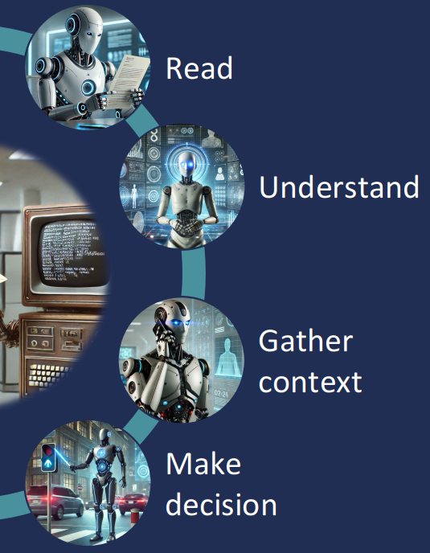

Chaque courrier reçu vous coûte 1€+...
...rien que pour le router vers le bon interlocuteur.
Synapse Postmaster est une solution alimentée par l'IA qui comble le fossé entre les communications entrantes et les processus numériques.
Demander une démoLe traitement traditionnel du courrier est coûteux, lent et sujet aux erreurs
Les systèmes informatiques ont besoin de données structurées, mais les courriers et e-mails nécessitent une saisie manuelle.
Le personnel passe des heures à lire, classer et router les e-mails et documents vers les bons services.
Les communications mal routées, les délais manqués et les documents perdus créent des risques de conformité.
Le traitement manuel crée des goulots d'étranglement, retardant le service client et les prises de décision.
Postmaster transforme les documents en données structurées, prêtes à être intégrées dans les systèmes de gestion

Postmaster va plus loin que la simple lecture de documents : il interprète le contexte, applique les règles métier et initie automatiquement les bonnes actions.
Traite les images scannées, PDF, documents structurés et non structurés, l'écriture manuscrite, les tableaux et même de longs rapports.
Utilise l'IA pour interpréter le sens, résumer le contenu, classifier les types de documents, extraire les informations clés du texte non structuré et corriger les incohérences.
Améliore la compréhension en se connectant aux systèmes back-office, CRM et ERP pour récupérer des informations complémentaires telles que les données client ou contrat et calculer le routage.
Détermine l'action correcte à entreprendre et l'initie automatiquement.
Un mélange sophistiqué de technologies IA travaillant ensemble pour une précision maximale
Le coordinateur stratégique qui fait avancer votre activité en traitant intelligemment les données et en prenant des décisions éclairées. Il applique des règles logiques aux faits et données pour en dériver des conclusions.
Gèrent les tâches linguistiques complexes incluant les demandes, la traduction et la génération de contenu.
Offrent un traitement rapide et efficace pour des tâches linguistiques ciblées, permettant une automatisation légère et économique.
Modèles de langage visuel pour l'interprétation avancée d'images et OCR, reconnaissance vocale pour capturer les informations provenant de sources audio.
Découvrez comment Postmaster transforme le traitement de documents dans différents secteurs
Traitez automatiquement les demandes de disponibilité, détails produits et recherches par caractéristiques. Postmaster crée des tickets, vérifie les capacités, interroge les systèmes de stock et route les demandes complexes vers des agents humains pour validation.
Classifiez les types de documents, appliquez l'OCR approprié, analysez le texte libre avec des LLM, interrogez l'historique client, évaluez la cohérence et la complétude, puis déclenchez les flux assurance.
Traitez les demandes de courrier postal en extrayant les identifiants de contrat et client, en interrogeant les systèmes de gestion pour validation, et en préparant les demandes de modification pour les calculs de règlement.
Analysez les demandes de devis, extrayez les détails des actifs, interrogez le CRM pour les niveaux de risque, vérifiez la conformité aux exigences, générez des devis automatiques et créez des tickets CRM.
Nous répondons aux défis clés rencontrés par les entreprises lors de la mise en œuvre de solutions IA
Nos LLMs respectent des standards rigoureux de confidentialité et de sécurité, protégeant vos informations financières et personnelles sensibles.
Choisissez les options de déploiement qui vous conviennent — infrastructure sur site ou cloud privé selon vos exigences spécifiques.
Utilisez les API REST et les messages Kafka pour vous intégrer aux systèmes legacy, ERP et logiciels spécialisés de manière transparente.
Notre stratégie multi-IA combine moteur d'inférence et modèles ML spécialisés pour une précision inégalée au-delà des LLMs seuls.
Les traces d'audit détaillées répondent à la nature « boîte noire » des LLMs, vous offrant une visibilité complète sur chaque décision.
Importez et exportez facilement les configurations système pour rationaliser les opérations, faciliter les migrations d'environnements et simplifier les déploiements.
Combler le fossé entre les systèmes déterministes et la compréhension IA
Les IA symboliques évitent les problèmes d'hallucination courants avec les LLMs, fournissant des résultats fiables et précis.
Visibilité complète sur le raisonnement décisionnel pour la conformité et le dépannage.
Les règles prédéfinies sont plus économiques que le calcul LLM coûteux pour les tâches de traitement routinières.
Automatisez des workflows complets depuis les demandes multi-canaux entrantes vers les processus numériques de manière transparente.
Traitez des informations auparavant incompréhensibles pour les systèmes legacy.
Prise de décision personnalisée basée sur le contexte client et contrat complet.
Découvrez comment Postmaster peut automatiser vos workflows et améliorer l'efficacité opérationnelle.
Demander une démo